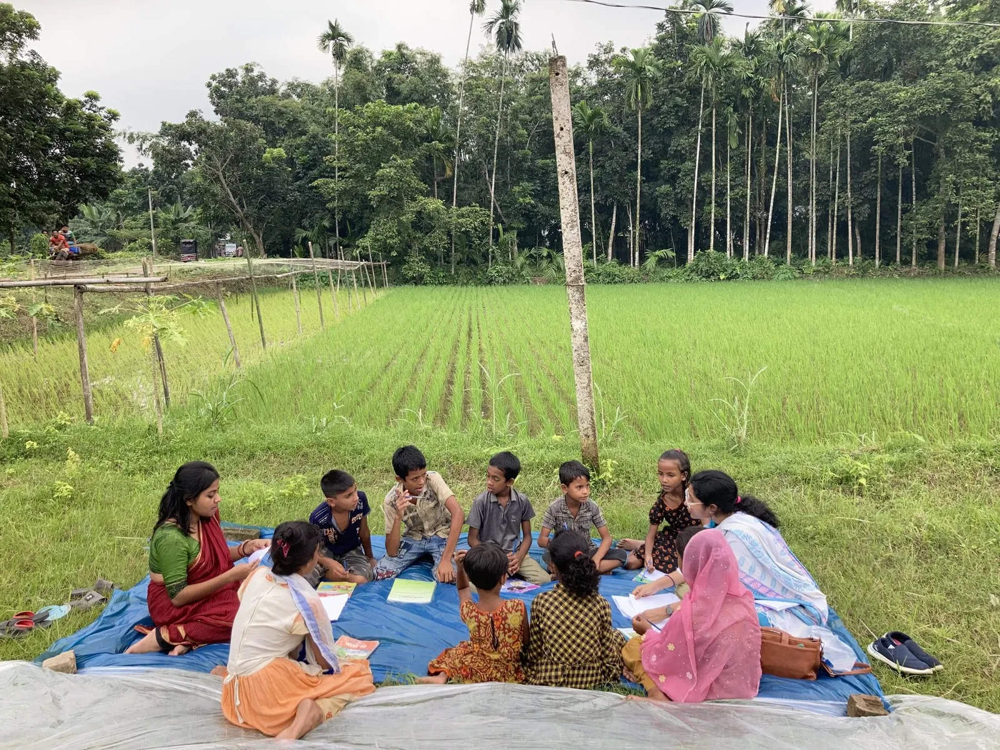

首页/手工艺线
Line 02 · 手工艺线（Handcraft Line）
手工缝制、手工织造，小批量生产。
纳克希坎塔、贾姆达尼、黄麻、皮革和家纺，由孟加拉国的女性手工艺人制作。每件都是手工制作，因此每件都略有不同。
- 起订量
- 欢迎咨询按设计而定
- 交期
- 欢迎咨询自样品确认后起算
- 制作者
- 孟加拉国的女性手工艺人
- 适合
- 胶囊系列、限量款，以及工厂成衣上的手工细节。
手工需要时间。欢迎咨询，我们会在报价中确认您设计的起订量和交期。


关于手工制作
您需要了解的事。

首页/手工艺线
Line 02 · 手工艺线（Handcraft Line）
纳克希坎塔、贾姆达尼、黄麻、皮革和家纺，由孟加拉国的女性手工艺人制作。每件都是手工制作，因此每件都略有不同。
手工需要时间。欢迎咨询，我们会在报价中确认您设计的起订量和交期。
关于手工制作
